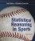
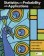

Data Analysis
1 Categorical Variable, Single Group
1 Categorical Variable, Multiple Groups
2 Categorical Variables
1 Quantitative Variable, Single Group
(
collaborative
)
1 Quantitative Variable, Multiple Groups
2 Quantitative Variables
(
collaborative
)
Multiple Regression
Normal Distributions and Probability
Normal Distributions
Law of Large Numbers
Discrete Random Variables
Binomial Distributions
Counting Methods
t Distributions
χ
2
Distributions
Activities
Can You Smell Parkinson's?
Hiring Discrimination
Does Beyoncé Write Her Own Lyrics?
How Much do Fans Like Justin Timberlake? Part 1
How Much do Fans Like Justin Timberlake? Part 2
Sampling Sunflowers
Is Mrs. Gallas a Good Free Throw Shooter?
M&M/Skittles Colors
Simulation-Based Inference
Streakiness
Testing a percentage/proportion/count
Testing a difference in percentages/proportions
Testing a difference in means
Testing a difference in medians
Testing a mean difference
Testing a difference in standard deviations
Estimating a percentage/proportion
Estimating a mean
Testing a correlation
Testing a slope
Traditional Inference
One sample z interval for a proportion
One sample z test for a proportion
Two sample z interval for proportions
Two sample z test for proportions
One sample t interval for a mean
One sample t test for a mean
Two sample t interval for means
Two sample t test for means
Linear regression t interval
Linear regression t test
Chi-square goodness of fit
Chi-square homogeneity
Chi-square independence
ANOVA
Applet Color, Rounding, and Percent/Proportion Preferences
(may not function properly on IE11 or below)
Other Applets

Applets for Statistical Reasoning in Sports 2/e
Applets for Statistical Reasoning in Sports 1/e

Applets for Statistics and Probability with Applications 4/e
Applets for The Practice of Statistics 6/e
Check out lesson plans, resources, and more at
Stats Medic
!